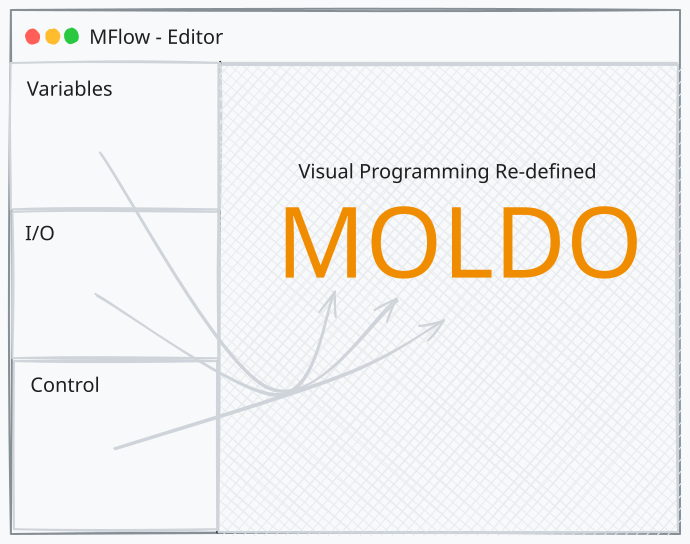

About the author

Grace Peter Mutiibwa
Software Engineering Student · Founder Clearnique
Moldo is an attempt to lower the barrier to programming education for learners by bridging block-based and text-based programming.
Moldo lets learners aged 8 to 19 build real programs by connecting flowchart blocks. Every block compiles to valid Python. No syntactic barrier. No dead ends.
Alpha · v0.5.0 · pip install moldo

Every block corresponds precisely to a Python construct. Learners acquire real programming knowledge through the visual interface.
The visual program compiles to executable Python via a JSON program tree. No custom runtime, no lock-in, just Python.
Ship new block types as .zip.mold packages. Install
with one click. No editor restart. No source modification.
Nodes highlight in execution order as your program runs. Errors pinpoint the failing block. No guessing.
Variables, I/O, Control, Math, Text, Collections, Functions. 31 block types out of the box covering all core programming concepts.
All programs live on your machine. Runs on Windows, macOS, and Linux. No account, no cloud, no subscription.
Drag blocks from the sidebar onto the canvas. Connect them with edges. Configure each block's parameters in the auto-generated settings panel.
The editor compiles your canvas to a JSON program tree, a structured representation of your program that the backend can walk and translate to Python.
{
"mold": "variables",
"block": "declare",
"params": {
"name": "score",
"dataType": "int",
"value": "0"
},
"next": { ... }
}The Moldo backend transpiles the JSON tree to Python source, runs it, and streams stdout and a node-highlight sequence back to the editor.
score = int(0)
for i in range(1, 11, 1):
score = score + i
print(score)
# Output: 55
A mold is a .zip.mold file containing a JSON manifest and
a Python package. Define your blocks in JSON, implement them in
Python, and publish as a GitHub Release. Users install with one click,
no restart required.
{
"name": "webscraper",
"displayName": "Web Scraper",
"version": "1.0.0",
"author": "Your Name",
"description": "Fetch and extract content from web pages.",
"moldoMinVersion": "0.5.0",
"isCore": false,
"blocks": [
{
"id": "fetch",
"name": "Fetch Page",
"nodeType": "process",
"nodeShape": "rect",
"color": "amber",
"icon": "globe",
"pythonCall": "webscraper.fetch_page",
"inputs": [
{
"id": "url",
"label": "URL",
"type": "text",
"placeholder": "https://example.com"
}
],
"outputs": [
{ "id": "result", "label": "Save result to", "type": "variable" }
]
}
]
}
The manifest defines your block's appearance, inputs, and which
Python function to call. The editor auto-generates the settings
UI from inputs[]. No UI code needed.
# webscraper/__init__.py
import urllib.request
import re
def fetch_page(url: str) -> str:
"""Fetch a URL and return the plain text content."""
with urllib.request.urlopen(url) as res:
html = res.read().decode()
text = re.sub(r'<[^>]+>', '', html)
return ' '.join(text.split())
# Moldo calls fetch_page(url=...) and assigns the
# return value to the variable the learner named.
Write a regular Python function. Moldo resolves
pythonCall at runtime and generates
result = webscraper.fetch_page(url=...) in the
compiled output.
# Pack your mold
zip -r webscraper.zip.mold \
moldo.json requirements.txt webscraper/
# Install via the REST API
curl -X POST http://127.0.0.1:8000/molds/install \
-F "file=@webscraper.zip.mold"
# List installed molds
curl http://127.0.0.1:8000/molds
# Uninstall
curl -X DELETE http://127.0.0.1:8000/molds/webscraper
# Or use the editor toolbar.
# Upload the .zip.mold file, no restart required.The REST API is the same one the editor uses internally. Automate mold deployment in CI, or distribute via GitHub Releases for one-click install from the editor.
webscraper.zip.mold
|-- moldo.json # Block definitions (required)
|-- webscraper/ # Python package (required)
| |-- __init__.py # Contains your callables
| `-- helpers.py # Supporting code
`-- requirements.txt # pip deps (optional)
# Input field types available in moldo.json:
# text, number, select, checkbox, variable
# Node shapes:
# rect (process), diamond (decision), circle (terminal)
# Publish on GitHub Releases as a .zip.mold asset.
# Learners install it directly from the editor toolbar.The starter template is in the mold-template/ folder. Clone it, rename the package, implement your functions, and ship.
A biology teacher can add cell-simulation blocks. A geography teacher can add climate-data blocks. Any Python developer can extend Moldo for any domain without touching the core system.
pip install moldo
moldo serveThe runtime starts at http://127.0.0.1:8000.
Drag a Declare Variable block onto the canvas. Add a Print block. Connect them. Hit Run.
That's Hello World in Moldo.
Software Engineering Student · Founder Clearnique
Moldo is an attempt to lower the barrier to programming education for learners by bridging block-based and text-based programming.